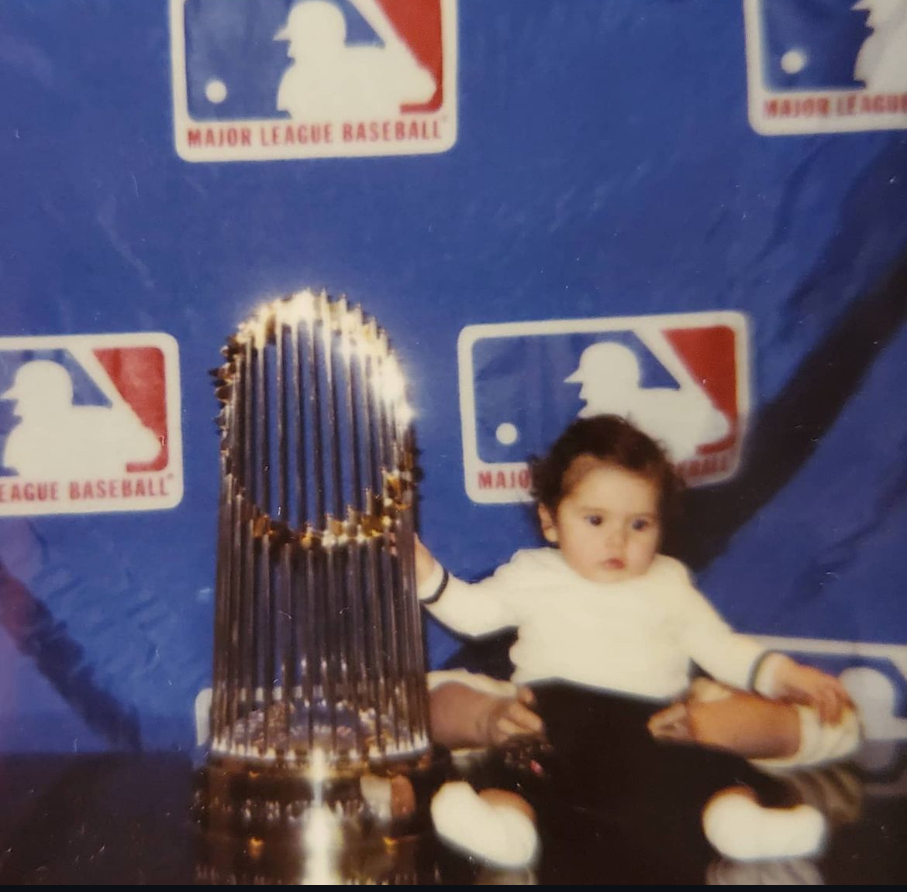
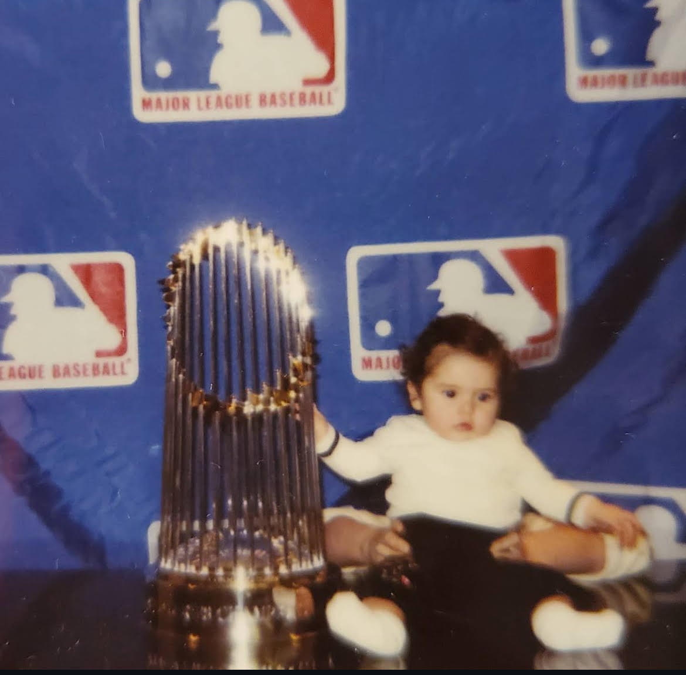

My name is Darcy Winter, and I use they/them pronouns. I’m based in New York, NY. I got my undergraduate degree in history from SUNY University at Buffalo. I have two wonderful cats who still live in Buffalo. The black one is Bob and the multicolored one is named Lovett.

This is my cat, Bob. We adopted him when I was in middle school. He acts more like a dog than a cat and likes to beg and steal food.
This is my cat, Lovett. We adopted her when I was in high school. She is emotionally attached to me. She is very small.
My interests
I love movies!
My top 3 are:
The Princess Bride
Clue
Heathers
Since beginning college in Buffalo, I’ve gotten really into sports. It’s nearly impossible to go to school in Buffalo without becoming fond of the Bills. My mom is a die-hard Bills fan, but I would say I am a casual enjoyer. I also like the Giants and the Ravens. The Ravens were the first and only professional football team I have ever seen play in person. Plus they have the best uniform. Since moving to New York, I have also gotten very into the baseball culture here. I was raised to be a Mets fan and now I think I can say that I am. Watching the city get so excited for the post-season has been really fun!

Above is a picture of me as a baby with the World Series Trophy. Photo courtusy of Marc Winter
I’m currently learning how to crochet.
My background in the arts
I have been making art since I was 3 years old. I’ve learned myriad methods and techniques in all sorts of fields. I can paint, draw, sew, crochet, act, and sing! I like to say it runs in my family, and I am proud to carry on the passion for the creative process. Below are pictures of some of my art throughout the years:
If you are interested in viewing my high school art show, the instagram is linked here
What am I listening to?
I make monthly playlist! It's one of my favorite hobbies. Linked below are the playlists for last few months. I don't own any of the cover art for these playlists